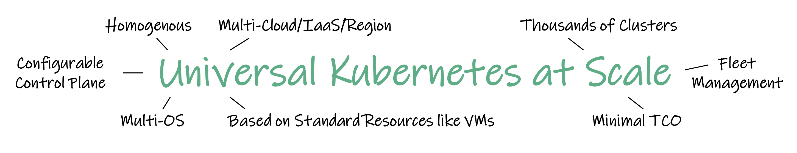
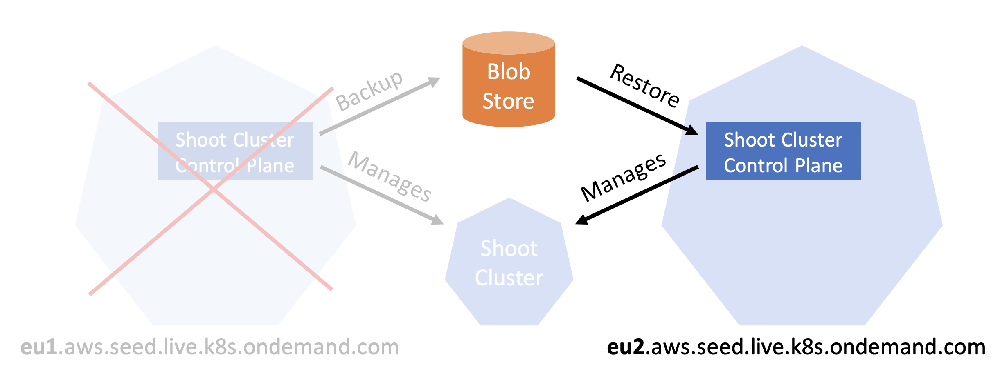

layout: true class: top title: Gardener: Správa Kubernetes pomocí Kubernetes place: Konference Kubernetes II. date: 20190924 datenice: 2019-09-24 email: veverka.kuba@gmail.com author: Jakub Veverka examples: https://github.com/jwerak/container-examples --- class: center # {{ title }} ## {{ author }} {{ place }} {{ datenice }} --- class: center ## About me .lc[ ### {{ author }} [{{ email }}](mailto:{{ email }}) [@jwerak](https://twitter.com/jwerak) Container Ecosystem Engineer<br> [SAP Concur](https://www.concur.com) ] .rc[  ] --- # About this talk - Installing Kubernetes - problem solved? - Evolution of Kubernetes at your company - Kubernetes Day 2 operations - Managing several Kubernetes clusters - Gardener (Kubernetes Botanist) --- # Value of Kubernetes - API for deploying applications - No need to worry about machines - Separation of concerns --- # Story of Kubernetes cluster --- ## Installing k8s .lc[ - kubeadm - kops - kubespray - ... ] -- .rc[ - GKE (GCP) - EKS (AWS) - AKS (Azure) - ... ] --- ## Kubernetes Day 2 operations - reconciliation - updates - vulnerability patching --- ## Extending Kubernetes cluster - Authentication - Logging - Monitoring - Ingress - Service-Mesh - Secrets - ... --- # one or many Kubernetes clusters - dev/test/production - multi location - per customer - per team - ... --- ## Cows vs Cattle - All clusters are equal - I can reset any cluster - TODO - ... --- # Gardener - The Kubernetes Botanist TODO: what is gardener --- ## The Gardener Mission Statement Provide Kubernetes Clusters-as-a-Service homogeneously on hyper-scalers and on-premise fully managed and with minimal TCO -- .center[  ] --- ## Gardener Features - Install Kubernetes cluster on many clouds - Managed control plane and workers - Create and manage clusters via kubectl or Dashboard - Hibernate entire Kubernetes cluster - Resilient architecture --- ## Gardener Architecture - TODO: Diagram --- ## Gardener Demo: create cluster via UI - TODO: video with creating cluster --- ## Gardener shoot cluster CRD --- ## Demo: create cluster via kubectl - TODO: video --- ## Gardener custom objects - TODO machine crd and machine controller --- ## Gardener demo - delete machine and observe reconciliation --- # Gardener Resiliance - Shoot cluster has issues Kubernetes (brings back the shoot cluster control plane / resources) - Machine Controller (brings back machines) - ETCD Backup & Restore (brings back the persistence) - Gardener reconciliation (brings back infrastructure, configuration, the very essence of what comprises a shoot cluster) Note: Workload not included and must be handled by the end users (e.g. Heptio Velero) --- # Gardener Resiliance - Seed cluster is lost .center[  ] --- # Conclusion TODO --- # Questions TODO: nice pic